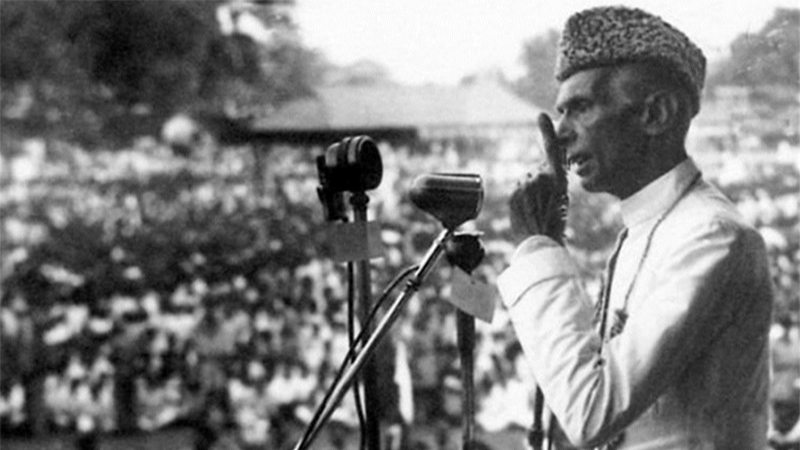

Quaid-e-Azam Muhammad Ali Jinnah
"The Great Personality"

" I do not believe in taking the right decision, I take a decision and make it right."
14 Points of Quaid-e-Azam
- The form of the future constitution should be federal, with the residuary powers vested in the provinces; A uniform measure of autonomy shall be guaranteed to all provinces;
- All legislatures in the country and other elected bodies shall be constituted on the definite principle of adequate and effective representation of minorities in every province without reducing the majority in any province to a minority or even equality;
- In the Central Legislature, Muslim representation shall not be less than one third;
- Representation of communal groups shall continue to be by means of separate electorate as at present: provided it shall be open to any community, at any time to abandon its separate electorate in favour of a joint electorate.
- Any territorial distribution that might at any time be necessary shall not in any way affect the Muslim majority.
- Full religious liberty, i.e. liberty of belief, worship and observance, propaganda, association and education, shall be guaranteed to all communities.
- No bill or resolution or any part thereof shall be passed in any legislature or any other elected body if three fourths of the members of any community in that particular body oppose it as being injurious to the interests of that community or in the alternative, such other method is devised as may be found feasible and practicable to deal with such cases.
- Sindh should be separated from the Bombay Presidency.
- Reforms should be introduced in the North West Frontier Province and Balochistan on the same footing as in the other provinces.
- Provision should be made in the constitution giving Muslims an adequate share, along with the other Indians, in all the services of the state and in local self-governing bodies having due regard to the requirements of efficiency.
- The constitution should embody adequate safeguards for the protection of Muslim culture and for the protection and promotion of Muslim education, language, religion, personal laws and Muslim charitable institutions and for their due share in the grants-in-aid given by the state and by local self-governing bodies.
- No cabinet, either central or provincial, should be formed without there being a proportion of at least one-third Muslim ministers.
- No change shall be made in the constitution by the Central Legislature except with the concurrence of the States constituting of the Indian Federation.
"was a Muslim politician in the Indian subcontinent and
leader of the All India Muslim League who founded Pakistan and served as its first Governor-General.
--Gandhi 11september-1948